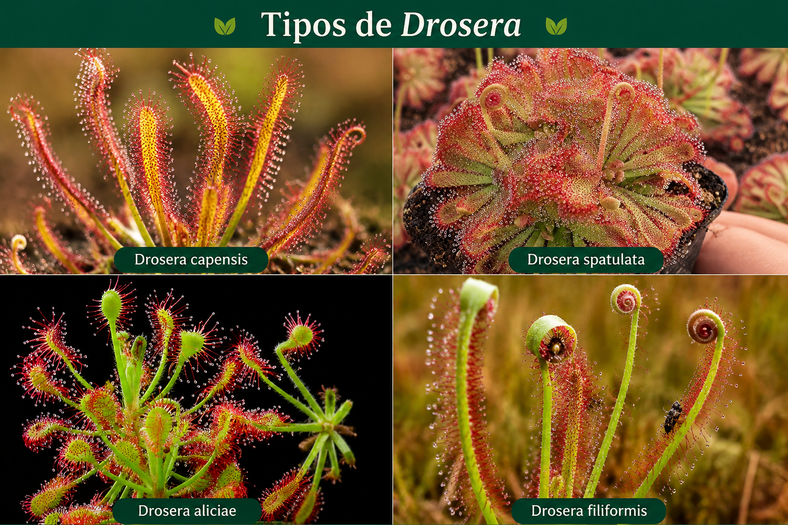
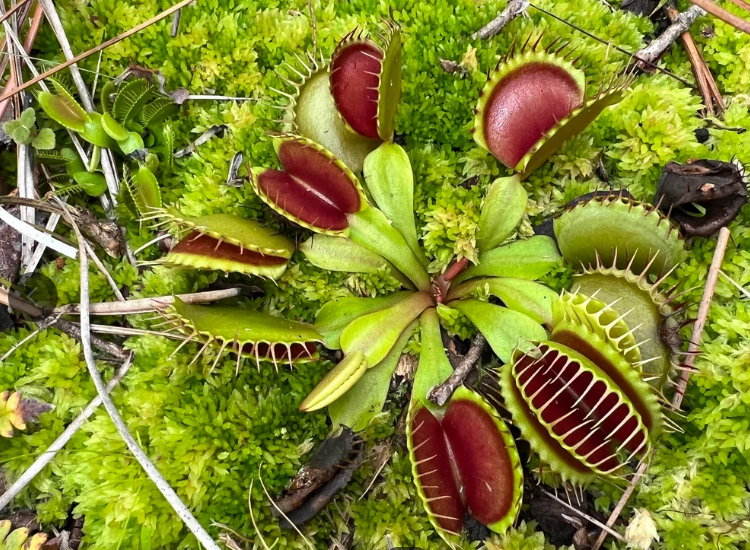
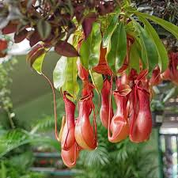
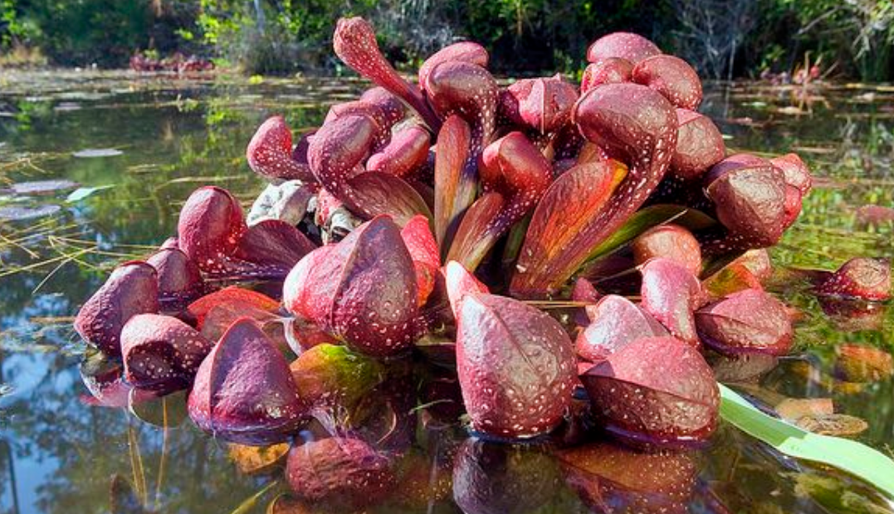
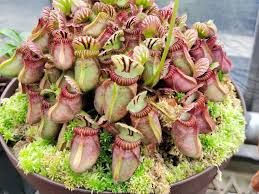
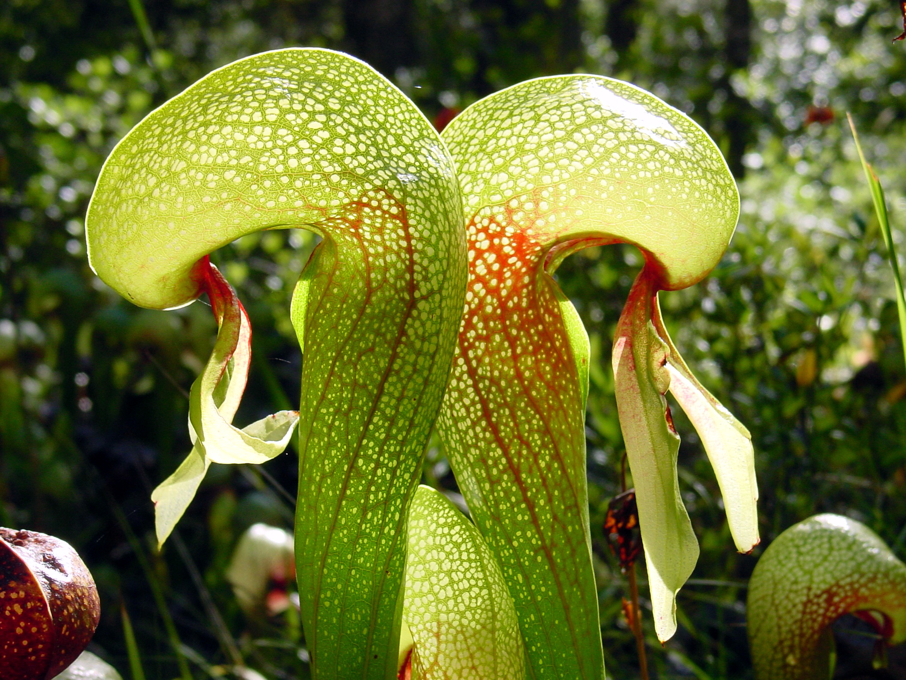
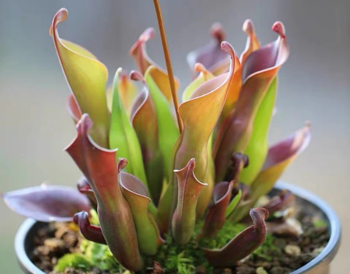
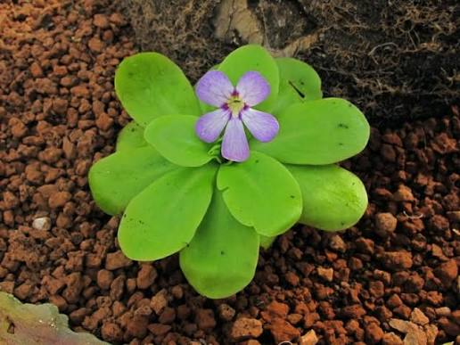
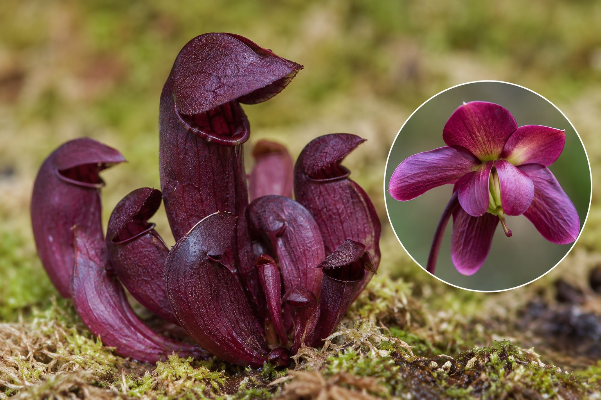
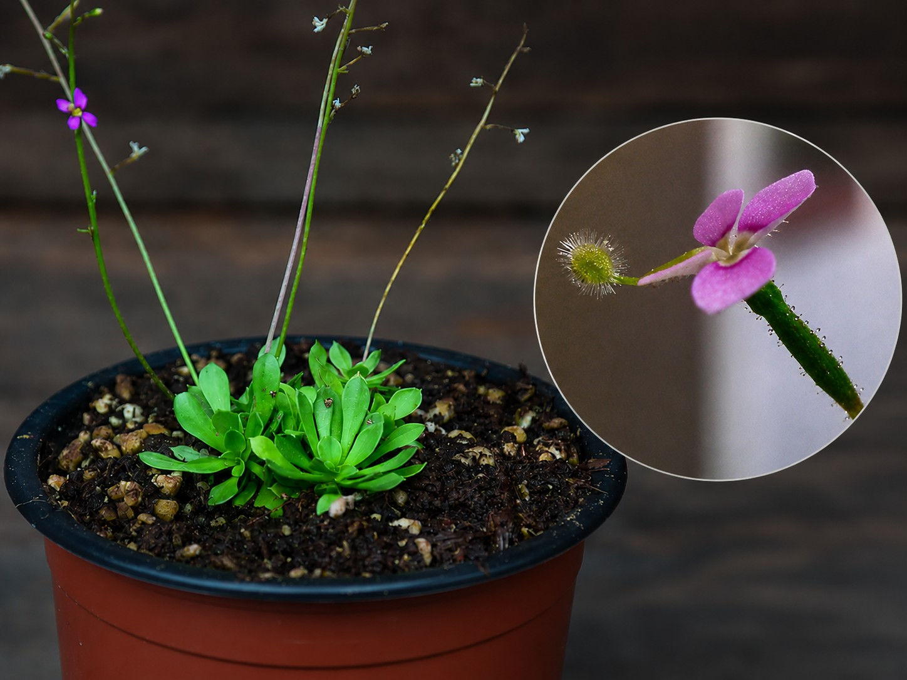

Trampa pegajosa
Drosera
Atrapa insectos con tentaculos cubiertos de mucilago pegajoso y brillante.
Ver másGuia visual de cultivo
Explora el fascinante universo de las plantas carnivoras.
Descubre especies extraordinarias como Drosera, Venus atrapamoscas, Nepenthes, Sarracenia, Cephalotus y Utricularia.
Coleccion principal
Busca, compara y conoce las formas de captura mas representativas.

Atrapa insectos con tentaculos cubiertos de mucilago pegajoso y brillante.
Ver más
Posee trampas que se cierran rapidamente cuando detectan el movimiento de una presa.
Ver más
Produce jarras colgantes con líquido digestivo para atraer, capturar y descomponer insectos.
Ver más
Tiene hojas tubulares en forma de jarra que atraen insectos hacia su interior.
Ver más
Planta australiana pequena con trampas tipo jarra compactas y muy decorativas.
Ver más
Captura organismos diminutos mediante pequenas vejigas de succion, muchas veces bajo el agua.
Ver más
Conocida como planta cobra por sus hojas curvas que atraen y confunden a los insectos.
Ver más
Planta jarra sudamericana de zonas montanosas, adaptada a ambientes humedos y pobres en nutrientes.
Ver más
Sus hojas pegajosas atrapan pequenos insectos y los digieren sobre la superficie foliar.
Ver más
Especie de jarra baja y robusta que acumula agua de lluvia para capturar y digerir presas.
Ver más
Produce flores delicadas y tallos con glandulas pegajosas capaces de retener insectos pequenos.
Ver más
Son cruces entre especies o variedades que combinan colores, formas y resistencia.
Ver másNo se encontraron especies con esa busqueda.
Cultivo esencial
Usar agua destilada, desionizada o de lluvia. Evitar agua mineralizada.
Necesitan buena iluminacion. Si falta luz, crecen debiles y alargadas.
Debe ser acido, pobre en nutrientes y sin fertilizantes comunes.
Algunas especies reducen su actividad en invierno y necesitan menos riego.
Audio y video
Escucha una breve explicacion sobre el cuidado de las plantas carnivoras.
Observa como estas plantas capturan insectos y se adaptan a su ambiente.